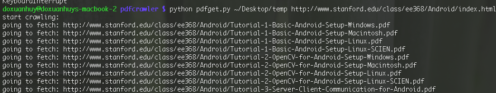

Github: @github
Twitter: @twitter
Facebook: @facebook
I'm currently master student learning/researching about datamining at Ritsumeikan university
I'm also an passionate programmer, currently working as part-time web developer (mainly using Ruby) at Framgia Inc and Sharewis Inc
I love building thing, especially in javascript and ruby, please checkout my github profile at left bar. I'm also have a greate care about beautiful source code which is clean and easy to extend. During free time, I spent most of time to read books (check out my read books at good read ) and build insteresting things with friends to keep my life less boring.
Read/researching about machine learning/ computer vision/ audio processing is fun, too. If you have any interesting idea or project, please feel free to drop me an email at here
I'm also writing a technical blog at here with some of my friends (available only in Vietnamese)
This below example is designed with render part and physical calculate part seprately. We use box2djs as physical engine.
$(imageobject).Overlay([list of text object])
//for example
$(this).Overlay([{"content":"doxuanhuy@gmail.com", "like":2}, {"content":"Ritsumeikan University", "like": 1}])
//like is to determine size of text, the more like, the bigger
I personally use this script to download lectures from university homepage. For example, just input tokyo university computer science department homepage, my script will crawl every labs homepage, every course homepage to get all pdf lectures
 Source code and usage is avaiable hereThis service main purpose is to provide a "light" way to share your presetation realtime to your friends (without using some "hard-core" screenshare software like skype or join.me. One more purpose is to improve interaction between audiences.
You can watch demo video below to get more infoClick here, turn on speaker or headphone to see (IMPORTANT!!!!!! please wait until 20s, to see the effect, the more faster the beat is, more circle will be emit.
This demo using html5 web audio api, and extract beat from audio wave to visualize.
Note!: check support of web audio api here. Best support browser for web audio api is Chrome
You can refer to my presentation at htmlday osaka
https://speakerdeck.com/huydx/web-audio-api-htmlday-osaka
dbname: 'your_sqlite3_dbfile.db'
dblocation: 'location of your db file'
ircserver: 'irc server name'
ircchannel: '#irc channel name'
-To add new url with tags : bm add [url] [#tag1] [#tag2]
-To delete an url : bm delete [url]
-To show url with tags : bm show [#tag1] [#tag2]
-To show all tags of system : bm tags
-To add new task: task add [[task-descriotion]] [user] (YYYY/MM/DD HHh)
-To show task of a user: task show [username]
-To delete a task: task delete [taskid]